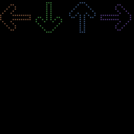
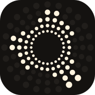
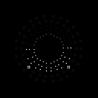
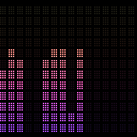
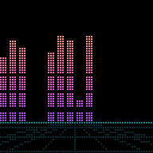
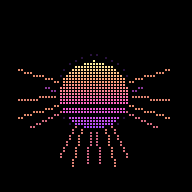

Dance
Arrows scroll up and land on the beat, like the arcade game.

An equalizer, known to be graphic.
Music on a Raspberry Pi LED panel, in sixteen styles from classic bars to Dance Dance Revolution. Free and open source.


Arrows scroll up and land on the beat, like the arcade game.

A hi-fi LED meter with a lit segment marking each peak.

Bars on a horizon, with the sun’s stripes cut through them.

A ring of rays around a small striped sun.
Sixteen styles in all, switchable from your phone. The full list is in the README. These animations are rendered by Equalize’s own code from a demo track, not recorded from a panel.
The Pi never listens to the room. It shows up as a silent speaker called “Equalize” and receives the same audio your speakers get, in step with them.
AirPlay 2 for Apple Music and most apps. Spotify Connect for Spotify (Premium): choose Equalize in Spotify’s device list.
Install it beside Spotipi Photo and the panel takes turns: album covers and photos when you play to the speaker alone, the equalizer when you also play to Equalize.
A Raspberry Pi 3 Model A+, an Adafruit RGB Matrix Bonnet, a 64×64 LED panel and a 5 V 4 A power supply. Two panels side by side give 128×64; 64×32 panels work too. A web page on your phone sets the style, colours, brightness and timers.
Running on a real Raspberry Pi and LED panel. Free and open source under the MIT licence.